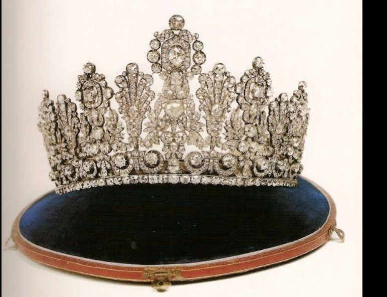
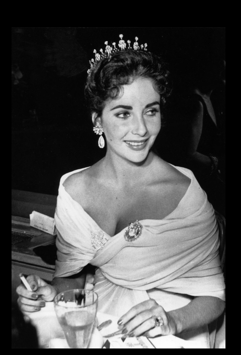
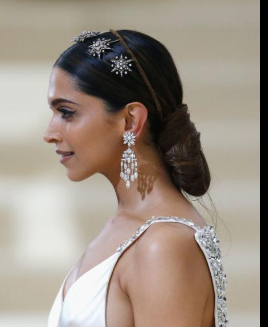
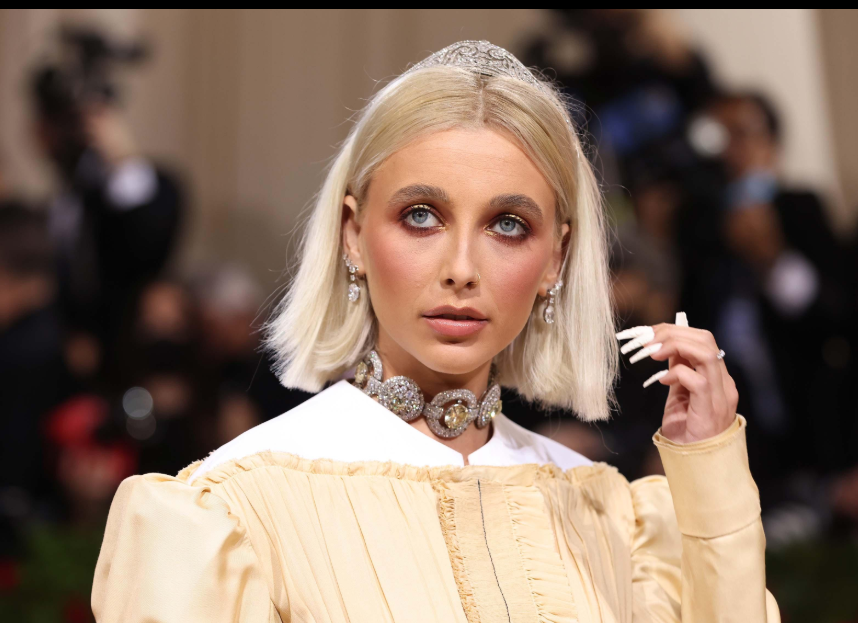

Fashion is often treated as a form of self-expression. We talk about colours, silhouettes, designers, trends, and personal style. But long before fashion became an industry, clothing and jewellery were used to communicate something much bigger: power.
Few objects demonstrate this better than the crown.
A crown is technically a piece of headwear, but historically it has represented authority, wealth, legitimacy, status, and even the idea of divine right. It could tell an entire room who held power before that person had spoken a single word.
And perhaps that is what makes the crown so fascinating. It was never simply an accessory.
It was a message.
More Than a Piece of Jewellery
At first glance, a crown is an elaborate object decorated with precious metals, gemstones, pearls, and intricate craftsmanship.
But its importance lies beyond its physical beauty.
For centuries, rulers used clothing and jewellery to distinguish themselves from everyone else. Rich fabrics, elaborate embroidery, precious stones, and elaborate headpieces created a visual separation between royalty and ordinary society.
The crown took that idea to its most recognizable form.
Placed above the head, it became almost impossible to ignore. It literally elevated the person wearing it.
A crown therefore communicated hierarchy without needing words.

The Language of Luxury
Royal fashion was never entirely about following trends.
It was about displaying resources.
Historically, producing elaborate clothing and jewellery required enormous amounts of time, money, skilled labour, and access to rare materials. Wearing these objects demonstrated that the person possessing them had access to resources that ordinary people did not.
Gold suggested wealth.
Diamonds suggested rarity.
Intricate craftsmanship suggested labour and expertise.
And the crown brought all of these ideas together.
The result was a visual language in which luxury itself became evidence of authority.

The Crown and the Idea of Legitimacy
There is another reason crowns became so powerful: they did not simply represent wealth.
They represented legitimacy.
A crown could signify that someone had been officially recognized as a monarch. Coronations transformed the object from a piece of jewellery into a political symbol.
The person wearing it was no longer simply an individual.
They represented a kingdom, a dynasty, and a system of government.
This is why crowns often carry histories of their own. They can survive the people who wear them and pass from one generation to another.
The object becomes a connection between the past and the present.

When Jewellery Becomes History
Some crowns are famous not because of their design alone, but because of the people and events associated with them.
They have appeared at coronations, ceremonies, portraits, state occasions, and moments that eventually became part of history.
This changes the way we look at them.
A modern viewer might see gemstones and craftsmanship.
A historian might see political continuity.
A fashion enthusiast might see design and construction.
A society might see an object representing an entire institution.
The same object can therefore communicate completely different things depending on who is looking at it.

Fashion and Power
The relationship between fashion and power did not disappear when modern fashion arrived.
It simply changed form.
Royal families still use clothing to communicate tradition, modernity, restraint, individuality, and cultural identity.
Political leaders also understand the importance of appearance. The colour of a suit, the cut of a dress, the presence or absence of jewellery, and even the simplicity of an outfit can influence how a person is perceived.
Fashion creates impressions before words do.
The crown is simply one of the oldest and most obvious examples of this principle.
From Royalty to Pop Culture
Interestingly, the symbolism of the crown eventually escaped the royal court.
Today, crowns appear everywhere.
In music. In film. In advertising. In sports. In streetwear. In logos and popular culture.
A crown can now suggest being the "best", standing above others, confidence, achievement, or even rebellion.
The object has therefore travelled from monarchy into popular culture.
Its meaning has become more flexible, but its central association with status remains.
The Crown as an Accessory
There is something particularly interesting about placing an object associated with monarchy into the world of fashion.
Once removed from its political context, a crown becomes an exaggerated accessory.
Designers can reinterpret it through shape, materials, scale, colour, and construction.
It can become delicate.
It can become theatrical.
It can become futuristic.
It can even become deliberately excessive.
This is where fashion begins playing with symbolism.
Why We Still Find Crowns Fascinating
Perhaps our fascination with crowns comes from the fact that they combine two things humans have always been drawn to: beauty and power.
They are visually spectacular, but their meaning makes them more interesting than an ordinary piece of jewellery.
A necklace can be beautiful.
A bracelet can be valuable.
But a crown tells a story about the person who wears it, the society that recognizes it, and the history that surrounds it.
It is fashion carrying political meaning.
When Fashion Becomes a Symbol
The history of the crown shows us that fashion has never been completely separate from society.
What we wear can communicate wealth, identity, occupation, culture, belonging, rebellion, and authority.
Sometimes that message is subtle.
Sometimes it is impossible to miss.
The crown belongs to the second category.
It sits above the head and announces its meaning immediately.
Perhaps that is why, even in an age where monarchies no longer hold the same role they once did, the image of a crown continues to fascinate us.
Because the crown was never only about royalty.
It was about the visual language of power.
And fashion, at its most interesting, has always been about telling us who we are—or who we want the world to believe we are.
← Back to Blogs